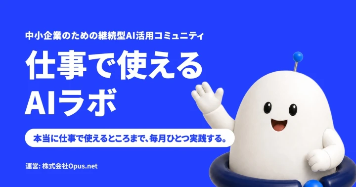

Products
自社で企画・運営するサービス
Opus.netは、交通事故にあった方を支える「事故なび」と、仕事でAIを使えるようになるためのコミュニティ「仕事で使えるAIラボ」を、自社で企画・運営しています。

Service
企業向けの支援サービス
自社サービスの開発・運用で培った実践的なノウハウをもとに、企業のAI活用や集客、業務システムの構築を支援します。
AI活用支援
AI研修・導入支援
現場で実際に使えるところまで、研修から社内ルールの整備、日常業務への組み込みを伴走します。
Web制作
Web制作・AI検索対策
ホームページやLPを制作し、ChatGPTやGeminiなどのAI検索で会社やサービスが正しく紹介されるよう、ページの構成を整えます。
クリエイティブ制作
映像制作
企画から撮影・編集まで、企業やサービスの魅力が伝わる動画をつくります。
システム開発
業務システム開発
自社で開発・運用してきた知見をもとに、顧客管理システム（CRM）や業務効率化ツールを受託で設計・開発します。
マーケティング支援
Web広告運用支援
Meta広告やリスティング広告の運用から効果の分析、LPの改善まで、問い合わせにつながる集客を支援します。
Vision
信頼で社会を支える、
未来のインフラへ。
テクノロジーと専門知識を活かし、AI活用、交通事故被害者サポート、映像制作、業務システム開発、マーケティング支援といった分野で、人と企業の前進を支える存在を目指します。
企業情報をみるOur Value
誠実であること。
すべての判断と行動の基準は「正しいかどうか」。短期的な利益より、長期的な信頼を大切にします。
知識を磨き、活かすこと。
専門性を高め続け、正確な情報で人を支える。学びを止めず、社会に還元します。
変化を恐れず、挑戦すること。
社会が抱える課題に真摯に向き合い、創造的な発想で、より良い社会の実現を目指し続けます。